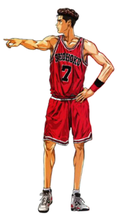

Hanamichi Sakuragi es el personaje principal de la serie Slam Dunk.
Al principio de la serie, Sakuragi es un vago, bueno para nada que no sea luchando.
Él es el líder de la temida "Legion Sakuragi", que consiste en su amigo de cuatro Mito, Noma, Ohkusu y Takamiya.
La búsqueda de Sakuragi para el amor no es más que humillante.
Siempre está tratando de hacer las niñas, pero se rechaza constantemente, el rechazo quincuagésimo ocurre al comienzo de la serie.
Luego conoció a Haruko Akagi, una fan de baloncesto encantador y amable, quien se enamoró de inmediato. Esto y el estímulo de Haruko le llevó a unirse al equipo de baloncesto de Shohoku.
Sin embargo, como un principiante, no es capaz de mantenerse al día con el resto del equipo en la primera, a pesar de sus atributos físicos (gran altura, forma física, resistencia, velocidad y capacidad de salto).
A pesar de los contratiempos que ha tenido que enfrentar, Sakuragi muestra una gran tenacidad y determinación que lo lleve a través de reciprocidad y ayuda a sus otros defectos, tanto dentro como fuera de la cancha.
A pesar de su amor por Haruko y rivalidad con Rukawa son las principales fuerzas motrices que motivan a tener éxito en el baloncesto, su lesión durante el partido Sannoh le hace darse cuenta de que en realidad ha llegado a amar el juego, que lo llevó a dar su todo por su equipo y llevarlos victoria.
Tekenori Akagi
Edad: 18 Años.
Fecha de nacimiento: 10 de Mayo.
Altura: 1.97 cm.
Posición: Central.
Número Camiseta: #4
Akagi es un capitán estricto y responsable del equipo de baloncesto Shohoku. Implementa disciplina hacia sus jugadores, especialmente Sakuragi.
Como lo describe Yasuda, es muy serio con el respeto de los años mayores. Aprecia a una persona dedicada y le gusta la limpieza.
También es una persona estudiosa y puede dedicar bastante tiempo al baloncesto y al mundo académico.
Considerado como el pívot # 1 en la prefectura de Kanagawa, Akagi juega como un pívot bastante típico, usando su altura y poder para anotar cerca de la canasta.
El más conocido es su "Gorilla Dunk" que proviene de su apodo, "Gori", dado por Sakuragi .
Kaede Rukawa
Edad: 15 Años.
Fecha de nacimiento: 01 de Enero.
Altura: 1.87 cm.
Posición: Alero.
Número Camiseta: #11
Rukawa es reservado, tranquilo, egoísto, insensible y muy frío.
No le importa nada más que el baloncesto. Cuando no está en la cancha, generalmente se lo ve dormido en el techo de Shohoku o en clase.
Cuando se trata de baloncesto, Rukawa no acepta la pérdida fácilmente.
Esto se muestra durante el partido de práctica entre estudiantes de primer año contra segundo y tercer año, especialmente contra Takenori Akagi.
Su objetivo es ser el mejor jugador de secundaria en Japón, y considera que Akira Sendoh de Ryonan es su mayor rival.
Al principio, muchos notaron el potencial de Rukawa para convertirse en una futura estrella del baloncesto.
El entrenador en jefe de Ryonan, Taoka, se sorprendió de que Rukawa fuera solo un estudiante de primer año.

Ryota Miyagi
Edad: 17 Años.
Fecha de nacimiento: 31 de Julio.
Altura: 1.68 cm.
Posición: Base.
Número Camiseta: #7
Al igual que Sakuragi, Miyagi está motivado para jugar por su amor por una chica: su mejor amiga y compañera de clase Ayako, la gerente del equipo, a quien se refiere como "Aya-chan".
Se sabe que posa para Ayako durante los partidos. Fuera de la cancha, Miyagi tiene fama de ser un chico malo. Estuvo hospitalizado por un tiempo después de su pelea contra la pandilla de Mitsui.
Miyagi es uno de los mejores bases de la prefectura de Kanagawa. A pesar de su pequeña constitución, pudo mantenerse al día con Kenji Fujima de Shoyo y Shinichi Maki de Kainan debido a su velocidad y conciencia dentro y fuera de la cancha.
Debido a su increíble velocidad y habilidades, algunos otros jugadores lo apodaron como 'Lightning Flash Ryota'. Sus habilidades como base eran tan grandes que muchos jugadores como Sendoh de Ryonan y Maki de Kainan incluso citaron que es un jugador a tener en cuenta.
Hisashi Mitsui
Edad: 18 Años.
Fecha de nacimiento: 22 de Mayo.
Altura: 1.84 cm.
Posición: Escolta.
Número Camiseta: #14
En su primer año, Mitsui tiene una confianza desbordante y es muy competitivo, especialmente hacia Akagi . En el partido de primer año, como había 12 estudiantes de primer año ese año, Mitsui se separó de sus compañeros de equipo de la escuela secundaria.
Él visualiza un futuro brillante para Shohoku hasta que su lesión en la rodilla izquierda durante la práctica se agrave debido a que regresa temprano en lugar de esperar una recuperación completa. A pesar de su eventual recuperación, su exclusión lo amargó y deja el baloncesto.
Se convirtió en líder de una pandilla, pero finalmente se arrepintió.
Regresa con una determinación renovada de conquistar la nación que alguna vez soñó.
Si bien fue competitivo contra Akagi durante su primer año, ha aprendido a aceptar a este último como el capitán adecuado para el equipo.
Tampoco tiene miedo de defender a un amigo, como hizo por Tetsuo; insistió en que Ryu y su pandilla lo golpearan en lugar de a este último.
Akira Sendoh
Es la estrella del equipo Ryonan, un jugador prodigio de carácter afable, que no toma nada ni muy en serio, ni muy a la ligera, por lo que su despreocupación inspira confianza a su equipo.
Suele ocupar la posición de alero a pesar de que en un partido contra el Kainan jugó en la posición de base pese a su altura para contrarrestar a su estrella Maki.
Sendoh es conocido por ser una persona tranquila, despreocupada y optimista que, por lo general, no se toma mucho de nada en serio, pero cuando se trata de baloncesto, parece disfrutar aceptando desafíos, principalmente en un juego de uno contra uno.
Es uno de los mejores jugador de Japón, y en un duelo que tuvo contra Kaede Rukawa en un parque, le enseño a Rukawa, que el baloncesto no solo se basa en los uno contra uno, y mientras no asimile eso y juegue más con sus compañeros, nunca podrá superar a Sendoh.
Shinichi Maki
Es el capitán del equipo de baloncesto de Kainan y se dice que es el mejor jugador de la región.
Fue coronado MVP de la prefectura dos veces. Como capitán del equipo, inspira mucho respeto y sus compañeros siguen sus órdenes al pie de la letra.
Aunque su personalidad difiere de la de Takenori Akagi , ocasionalmente tiene que ser estricto cuando trata con Nobunaga Kiyota .
Kenji Fujima
Es el capitán y entrenador del equipo Shoyo. Por lo tanto, tiene el doble de responsabilidad y carga de trabajo que cualquier otro jugador. Por lo general, se sienta fuera durante los juegos porque necesita observar y tomar decisiones como entrenador. No obstante, se unirá a los juegos si siente que sus compañeros lo necesitan.
No solo es una persona inteligente y responsable, también es un jugador de baloncesto muy talentoso. Es uno de los mejores jugadores de la región, junto con Shinichi Maki del equipo Kainan. Solían competir por el título de MVP.
Nobunaga Kiyota
Es un estudiante de primer año en Kainan High y es el único estudiante de primer año en la alineación inicial del equipo.
Al igual que Hanamichi Sakuragi de Shohoku, sus payasadas a menudo lo convierten en una fuente de vergüenza para su equipo
Kiminobu Kogure
Es el vice-capitán de Shohoku y un buen amigo de Akagi desde la escuela secundaria.
Él y Akagi son los únicos dos jugadores que han estado en el equipo durante los tres años: Mitsui se fue durante su primer año, mientras que otros jugadores abandonaron el equipo porque encontraron que el régimen de entrenamiento de Akagi era demasiado agotador.
Mitsuyoshi Anzai
Es el entrenador del equipo de baloncesto de Shohoku High School y uno de los mejores entrenadores de Japón.
Incluso los entrenadores de otros equipos lo llaman "Anzai-sensei" con respeto.
Su actitud tranquila y serena contrasta con el temperamento que tuvo en el pasado como entrenador universitario exigente, lo que le valió el apodo de "Diablo de pelo blanco".
Ayako
es la gerente del equipo y objeto del afecto de Ryota Miyagi . De voluntad fuerte, al principio Ayako no parece corresponder a los sentimientos de Ryota por ella, que ella conoce, y no lo hará hasta el final de la serie.
Ella es directamente responsable de agudizar las habilidades de Sakuragi para los partidos reales al entrenarlo en lo básico, como la posesión del balón y el regate.
Haruko Akagi
Es la hermana menor de Takenori Akagi y el interés amoroso de Hanamichi Sakuragi, quien fue el responsable de descubrir su potencial en el baloncesto.